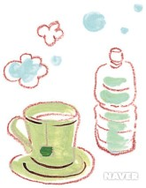

여드름 관리하기
매일 깨끗하게 씻어라.
머리카락의 유분이 여드름에 영향을 줄수 있기 때문에 머리를 자주감고,
세수도 깨끗이 하여 얼굴에 기름기가 쌓이는것을 막아야 한다.
손으로 얼굴을 만지지 마라.
손에는 우리 눈에 보이지 않는 수많은 먼지와 세균이 있다.
손에있는 먼지나 세균이 얼굴로 옮아가면 얼굴의 모공이 막힐수 있고,세균이 피부를 자극해 여드름을 악화시킬수도 있다.
그러니 얼굴을 손으로 만지는 습관이 있다면 고치는 것이 좋다.
기름기가 많은 음식이나 인스턴트 음식을 주의해라.
많은 양의 과자나 초콜릿,탄산음료와 같은 인스턴트 음식은 여드름을 악화시킨다.
이런 음식 대신 비타민이 풍부한 제철과일이나 채소를 먹는 것이 좋다.
물을 충분히 마셔라.

하루에 6잔 이상의 물을 마시는 것이 좋다.
물을 많이 마시면 몸에 쌓인 노폐물이 빠져나가서 건강에도 좋다.
충분한 휴식을 취해라.

스트레스가 심하거나 잠이 부족하면 부신피질호르몬이 분비되어 피지선을 자극하게 된다.
그렇게되면 여드름이 생기기 쉬워진다.그러므로 스트레스를 잘 관리하고 충분한 수면을 취해아 한다.
여드름을 무조건 짜지 마라.
여드름은 일주일 정도가 지나면 사라지기도 하니, 무조건 짜지마라.
잘못 짜면 오히려 흉터가 생길수도 있다.
출처:https://terms.naver.com/entry.nhn?docId=3348432&cid=47309&categoryId=47309